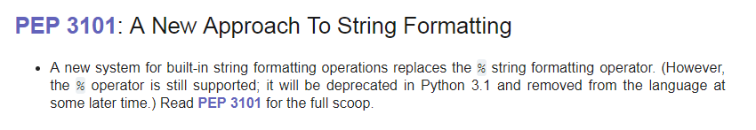

Python3.0-3.6的版本变化
目录
1 前言
我记得上次整理 2.5-2.7 的版本变化的时候还是寒假， 结果这个暑假有轮到 3.0-3.6 了。
虽然已经用了一段时间的 Python3 了， 感觉也还可以， 但是还是没有对 Python3 的新特性进行系统的了解。
前段时间 Python3.7 横空出世， 看了看我电脑上的 Python3.6, 觉得有必要对 Python3 的特性进行一下了解了。
3.0-3.6 一共七个版本， 估计要花不少时间， 准备慢慢搞了， 一天弄一点。
2 Python3.0
2.1 简单的变化
Print Is A Function
print现在是一个function而不是一个关键字了， 对于这个变化我只能说 ⑥Views And Iterators Instead Of Lists
某些接口的返回值由
List替换为了View或Iterators:- 字典
dict的方法dict.keys(),dict.items()和dict.values()现在返回的是View而不是List了 - 内置函数
map()和filter()现在返回Iterators而不是返回List range()的行为变得和xrange()一样， 而xrange()惨遭移除 QAQzip()现在返回的也是Iterators了
感觉这些变化适应了就挺好的， 还可以在一定程度上提升
Python的性能， 就是苦了那些需要兼容Python2的程序 @_@- 字典
- Ordering Comparisons
比较操作符
<,<=,>=和>现在比较两个无法比较的对象时会引发TypeError, 比如0 > None之类的操作。 不包括!=和==这两个操作符。Python2居然可以这样比较……内置函数
builtin.sorted()和list.sort()不在支持cmp参数。让坑过……
不在支持
cmp()和__cmp__(), 现在使用__lt__()进行排序，__eq__()和__hash__()用于比较。这个没啥存在感 @_@
Text Vs. Data Instead Of Unicode Vs. 8-bit
老话题了，
byte变成了unicode, 不过用起来感觉不错
2.2 语法的变化
2.2.1 新语法
PEP 3107 – Function Annotations
现在函数的参数和返回值都可以有注释了， 但是貌似没看到有人用， 有兴趣的可以了解一下：
def compile(source: "something compilable", filename: "where the compilable thing comes from", mode: "is this a single statement or a suite?"): ... def haul(item: Haulable, *vargs: PackAnimal) -> Distance: ...
PEP 3102 – Keyword-Only Arguments
def compare(a, b, *ignore, key=None): if ignore: # If ignore is not empty raise TypeError
类似上面代码的代码现在可以用如下方式代替：
def compare(a, b, *, key=None): ...
PEP 3104 – Access to Names in Outer Scopes
新的关键字
nonlocal, 可以声明一个变量不是本地变量， 具体使用可以去看文档。PEP 3132 – Extended Iterable Unpacking
扩展的可迭代包， 原来这样的语法是
3.0出来的：(a, *rest, b) = range(5)其实感觉用的也不多， 但是确实是一个很不错的特性
-
字典推导式 的正确证明， 莫非当初只是提出了
PEP 274但一时没实现 ？反正感觉编写文档的作者挺高兴的 <_<
集合字面值
也就是说类似下面的字面值表示一个集合：
{1, 2}同时， 集合推导式 也自然而然的出现了：
{x for x in stuff}新的八进制字面值
类似
0o720的数字代表八进制数字， 早在2.6就有了新的二进制字面值
类似
0b1010的数字代表二进制数字， 也是2.6就有了， 同时新增内置函数bin()字节字符串
现在使用前导字符
b或B来表示一个字节字符串：b'123456'同时， 新增内置函数
bytes()
2.2.2 改动的语法
新的
raise语法raise [expr [from expr]]
额， 感觉没人用的样子
- 这些东西现在是保留字：
True,False,None,with,as PEP 3110 – Catching Exceptions in Python 3000
就是这个：
try: try_body except E, N: except_body
变成了：
try: try_body except E as N: except_body
PEP 3115 – Metaclasses in Python 3000
元类的指定方式变了：
# Python2 class C: __metaclass__ = M ... # Python3 class C(metaclass=M): ...
贼坑， 如果要兼容可以使用
with_metaclass
2.3 剩下的变化
这次的整理主要是了解一些新特性和常用的变化， 对于哪些说出去基本没人知道的特性的变化还是算了吧……
因此， 剩下的变化我选择省略， 如果你有兴趣的话， 可以到 官方文档 了解一波。
另外， 这里有一个很有趣的事情：

Python 3.6.2 (v3.6.2:5fd33b5, Jul 8 2017, 04:14:34) [MSC v.1900 32 bit (Intel)] on win32 Type "help", "copyright", "credits" or "license" for more information. >>> "%s" % 123456 '123456'
@_@
3 Python3.1
相对 3.0 来说， 3.1 的变化不是很多， 简单来看看。
PEP 372 – Adding an ordered dictionary to collections
In [1]: from collections import OrderedDict In [2]: d = OrderedDict() In [3]: d['parrot'] = 'dead' In [4]: d['penguin'] = 'exploded' In [5]: d.items() Out[5]: odict_items([('parrot', 'dead'), ('penguin', 'exploded')])
有序字典， 这个在一些需要保持原有顺序的地方很有用。
PEP 378: Format Specifier for Thousands Separator
In [1]: format(1234567, ',d') Out[1]: '1,234,567' In [2]: format(1234567.89, ',.2f') Out[2]: '1,234,567.89' In [3]: format(12345.6 + 8901234.12j, ',f') Out[3]: '12,345.600000+8,901,234.120000j'
都快忘记有
format这个内置函数了 QAQ感觉这个特性还是挺好的， 用到的时候可以省不少劲。
new method bit_length() for int type
>>> n = 37 >>> bin(n) '0b100101' >>> n.bit_length() 6
虽然还有一些其他的变化， 但我觉得剩下的变化简单了解一下就好， 就不列出来了。
4 Python3.2
和 3.1 一样， 变换不是很多， 简单看一下就好。
PEP 3147: PYC Repository Directories
新的缓存机制， 以前的缓存方案为
.pyc文件， 但是这个方案在安装了多个Python的机器上运行的不太好。于是现在更换的缓存机制， 将缓存保存在了
__pycache__目录中， 同时根据Python版本命名缓存文件。目录
__pycache__基本上一出现我就直接删除了 QAQnew start option -q
使用
Python -q启动解释器可以不显示版本信息， 感觉对我来说暂时没啥用。range objects now support index and count methods
>>> range(0, 100, 2).count(10) 1 >>> range(0, 100, 2).index(10) 5 >>> range(0, 100, 2)[5] 10 >>> range(0, 100, 2)[0:5] range(0, 10, 2)
我觉得这是一个很棒的特性 (￣▽￣)／
The callable() builtin function from Py2.x was resurrected
什么，
callable()GG 过 !!!∑(ﾟДﾟノ)ノ
剩下的变化主要是关于内置模块和低层接口的， 这些东西还是在实践中看相关的文档好了。
5 Python3.3
和前面两个版本一样， 核心的语法变化不是很多， 简单来看一下就好。
PEP 397 – Python launcher for Windows
如果你的操作系统是
Windows, 并且安装了不止一个版本的Python, 那么这个特性应该不陌生。通过如下的指令来启动指定版本的
Python解释器：py -2.7 py -3.6
PEP 380 – Syntax for Delegating to a Subgenerator
我觉的这是个好东西， 通过文档中的一个例子来看：
>>> def g(x): ... yield from range(x, 0, -1) ... yield from range(x) ... >>> list(g(5)) [5, 4, 3, 2, 1, 0, 1, 2, 3, 4]
这个很爽啊， 又可以少写几行代码 @_@
PEP 409 – Suppressing exception context
这个特性可以让异常的输出更加清楚 ？
>>> class D: ... def __init__(self, extra): ... self._extra_attributes = extra ... def __getattr__(self, attr): ... try: ... return self._extra_attributes[attr] ... except KeyError: ... raise AttributeError(attr) from None ... >>> D({}).x Traceback (most recent call last): File "<stdin>", line 1, in <module> File "<stdin>", line 8, in __getattr__ AttributeError: x
关键点在
from None上， 没有这个from None的话， 抛出的异常会是这样的：Traceback (most recent call last): File "<stdin>", line 6, in __getattr__ KeyError: 'x' During handling of the above exception, another exception occurred: Traceback (most recent call last): File "<stdin>", line 1, in <module> File "<stdin>", line 8, in __getattr__ AttributeError: x
PEP 414 – Explicit Unicode Literal for Python 3.3
这个特性运行在
Python3的版本环境中使用u前缀显示的声明unicode字符串：u'text' U'text'
虽然已经习惯了， 但还是想吐槽
2 -> 3的版本变化是真的阔怕……PEP 3155 – Qualified name for classes and functions
函数和类对象的新属性：
__qualname__, 效果看代码：>>> class C: ... class D: ... def meth(self): ... pass ... >>> C.D.__name__ 'D' >>> C.D.__qualname__ 'C.D' >>> C.D.meth.__name__ 'meth' >>> C.D.meth.__qualname__ 'C.D.meth'
6 Python3.4
这个版本的文档结构比前面几个版本清楚多了， 简单看一下新特性。
PEP 453 – Explicit bootstrapping of pip in Python installations
这个特性很好， 很
nice, 现在你可以通过这样的命令来安装pip了：python -m ensurepip
之前我的
pip因为一天命令 GG, 也因为一条指令还原 QAQ
emmmm, 剩下的变化对我们写代码的影响不大， 省略。
7 Python3.5
PEP 492 – Coroutines with async and await syntax
针对 协程 的新关键字
async和await, 官网的例子：import asyncio async def coro(name, lock): print('coro {}: waiting for lock'.format(name)) async with lock: print('coro {}: holding the lock'.format(name)) await asyncio.sleep(1) print('coro {}: releasing the lock'.format(name)) loop = asyncio.get_event_loop() lock = asyncio.Lock() coros = asyncio.gather(coro(1, lock), coro(2, lock)) try: loop.run_until_complete(coros) finally: loop.close() # results coro 2: waiting for lock coro 2: holding the lock coro 1: waiting for lock coro 2: releasing the lock coro 1: holding the lock coro 1: releasing the lock
我觉得这是一个很重要的新特性， 目前在
Github上已经可以看到一些只针对高版本Python开发的库，其中就用到了这一特性。当然了， 目前我对协程的了解并不多， 因此也更应该去了解。 嗯， 现在知道这么一个特性了。
PEP 465 – A dedicated infix operator for matrix multiplication
这应该算是语言的应用场景反过来影响语法开发的一个实例吧， 针对 矩阵运算 的操作符
@.>>> import numpy >>> x = numpy.ones(3) >>> x array([ 1., 1., 1.]) >>> m = numpy.eye(3) >>> m array([[ 1., 0., 0.], [ 0., 1., 0.], [ 0., 0., 1.]]) >>> x @ m array([ 1., 1., 1.])
这些东西都没用过， 不做评价。 有兴趣的可以了解一下。
PEP 448 – Additional Unpacking Generalizations
扩展了
*iterable和**dictionary拆包操作符的允许用法， 现在可以在函数中调用任意数量的拆包：>>> print(*[1], *[2], 3, *[4, 5]) 1 2 3 4 5 >>> def fn(a, b, c, d): ... print(a, b, c, d) ... >>> fn(**{'a': 1, 'c': 3}, **{'b': 2, 'd': 4}) 1 2 3 4
同时， 元组， 列表， 集合， 字典等允许同时多个解包：
>>> *range(4), 4 (0, 1, 2, 3, 4) >>> [*range(4), 4] [0, 1, 2, 3, 4] >>> {*range(4), 4, *(5, 6, 7)} {0, 1, 2, 3, 4, 5, 6, 7} >>> {'x': 1, **{'y': 2}} {'x': 1, 'y': 2}
恐怖如斯 ！
-
和这个特性有关的一个特性： PEP 3107. 我觉得， 只要看了它的表现形式你也应该明白是和什么有关了：
def greeting(name: str) -> str: return 'Hello ' + name
通过注释来表示参数和返回值的类型，但是解释器运行时会忽略这些注释，因此，也只有注释的作用。
感觉
Python代码长得越来越奇怪了 QAQ
8 Python3.6
PEP 498 – Literal String Interpolation
现在我学过的脚本语言都会这一套了：
>>> name = "Fred" >>> f"He said his name is {name}." 'He said his name is Fred.' >>> width = 10 >>> precision = 4 >>> value = decimal.Decimal("12.34567") >>> f"result: {value:{width}.{precision}}" # nested fields 'result: 12.35'
感觉通过
Python的 名称空间 来实现这个特性还是很方便的， 不知道是不是这样来实现的。PEP 526 – Syntax for Variable Annotations
通过特殊的语法来对变量的类型进行注释：
primes: List[int] = [] captain: str # Note: no initial value! class Starship: stats: Dict[str, int] = {}
其他的注释也可以：
name: 'your name'但似乎就只有注释的作用 ？
>>> name: str = 10PEP 515 – Underscores in Numeric Literals
通过在数字中添加下划线来提高可读性：
>>> 1_000_000_000_000_000 1000000000000000 >>> 0x_FF_FF_FF_FF 4294967295
PEP 525 – Asynchronous Generators
3.5引入了关键字async和await, 但是， 通过async修饰的函数内部不能在使用yield, 现在， 这个限制解除了：async def ticker(delay, to): """Yield numbers from 0 to *to* every *delay* seconds.""" for i in range(to): yield i await asyncio.sleep(delay)
代码更难懂了……
PEP 530 – Asynchronous Comprehensions
现在在各种推导式， 生成式中都可以用
async了：result = [i async for i in aiter() if i % 2] result = [await fun() for fun in funcs if await condition()]
PEP 487 – Simpler customisation of class creation
现在可以在不使用元类的情况下自定义子类创建， 通过方法
__init_subclass__:>>> class QuestBase: ... # this is implicitly a @classmethod (see below for motivation) ... def __init_subclass__(cls, swallow, **kwargs): ... cls.swallow = swallow ... super().__init_subclass__(**kwargs) >>> class Quest(QuestBase, swallow="african"): ... pass >>> Quest.swallow 'african'
PEP 487 – Simpler customisation of class creation
PEP 487除了前面那个特性以外， 还增强了 描述器 协议 (ノ｀Д)ノclass IntField: def __get__(self, instance, owner): return instance.__dict__[self.name] def __set__(self, instance, value): if not isinstance(value, int): raise ValueError(f'expecting integer in {self.name}') instance.__dict__[self.name] = value # this is the new initializer: def __set_name__(self, owner, name): self.name = name class Model: int_field = IntField()
__set_name__这个方法会在描述器定义时自动定义，owner是这个描述器的拥有者，name则是描述器在owner中的名称。在上述例子中，
name就是int_field.- PEP 529: Change Windows filesystem encoding to UTF-8
- PEP 528: Change Windows console encoding to UTF-8
PEP 520 – Preserving Class Attribute Definition Order
现在类的
__dict__中的属性顺序和定义顺序保持一致了。PEP 468 – Preserving the order of **kwargs in a function
**kwargs形式的参数现在会保持传入的顺序：>>> def func(**kwargs): ... print(kwargs) ... >>> func(a=1, b=2, c=3, ab=4) {'a': 1, 'b': 2, 'c': 3, 'ab': 4}
9 完结撒花
了解这些版本特性变化的过程中， 虽然已经省略了相等一部分的内容， 但还是花了我不少时间。
并且， 这次只是知道了有什么新特性， 不代表会用了 @_@
感觉 Python 的特性是越来越多， 可以说， 我学过的所有语言中， Python 的特性是最多的。
想起前几天 Guido van Rossum 退出核心决策圈的原因， 还有已经发布的 Python3.7…
<・)))><<